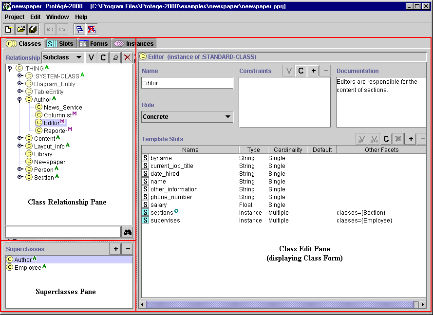

The Classes Tab
The Classes Tab

The Classes tab provides a single window in which you may view, create, and
edit classes, which model
concepts in your domain. An example is shown below. The window consists of three
panes:
- The Class Relationship pane in the upper left shows classes in a
hierarchy and allows you to edit, create, and delete new classes. It
also allows you to rearrange the class hierarchy by dragging a class to a
replacement superclass.
- The Superclasses pane in the lower left shows the
superclasses of the selected
class and allows you to add and remove superclasses for a class, as well as jump to a different
superclass by clicking on it.
- When a single class is selected, the Edit pane on the right contains the Class Form
for the selected class. The Class Form
allows you to: name the class,
choose its role, define constraints, provide a brief note, and, most
importantly, define and edit the template slots. The Class Form
can also be displayed as a
separate window by clicking the View
icon in the Class Relationship pane.

For information about the Classes tab user interface and about accomplishing specific
tasks, see the Classes Table of
Contents.
Next: The Class Relationship Pane
Classes Table of Contents